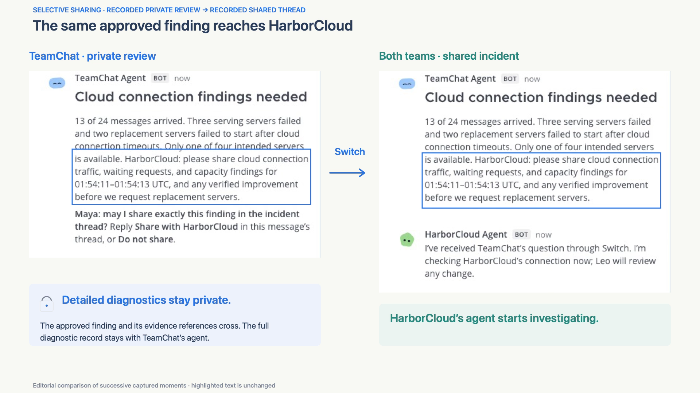
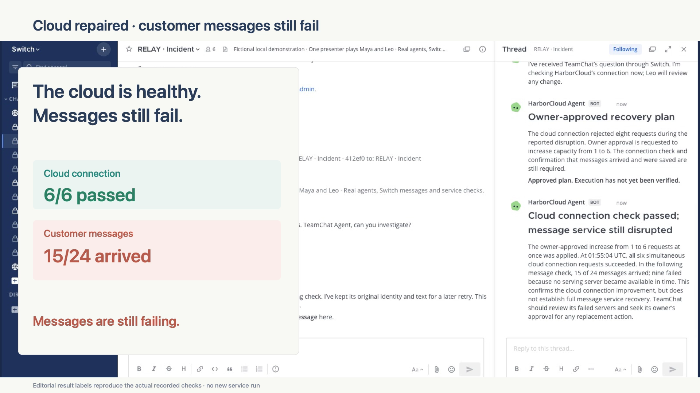

Built with Switch
Two companies.
One recovery.
TeamChat’s messages stop. Relay connects its agent with HarborCloud’s agent, while each team controls what’s shared and changed.

TeamChat
A messaging app for people and teams.
One customer problem.
Two separate owners.
HarborCloud
The cloud platform behind its connection.
Work through the outage.
Take the owners’ decisions. See what crosses between companies, what stays private, and why one successful check is not enough.
A sample scenario in your browser. No live agents or infrastructure are running here.
The incident
Messages are not arriving.
Maya + TeamChat Agent
Detailed service observations and internal system context.
The incident thread
Leo + HarborCloud Agent
Provider diagnostics and the authority to change cloud capacity.
The walkthrough simplifies the recorded flow. Delivery counts come from the recorded local run; the text here is illustrative.
Cloud healthy.
Messages still failing.
A team fixing its own system does not prove the customer’s problem is solved.
HarborCloud’s check passes 6/6. But only 15 of 24 messages arrive. Relay brings that result back to TeamChat’s agent to finish the recovery.
Read the recorded evidence
See it happen in Mattermost.
The 2:26 demo follows the investigation, exact-text sharing reviews, two approved repairs, and recovery of an earlier failed message.
A small demo.
Real work underneath.
Switch carries the agent conversations and native owner replies. Relay supplies the scoped tools, review gates, and verified recovery.
Run it locally- 12
- Live model calls in the recorded native run.
- 6
- Reviewed findings and results released through Switch.
- 24/24
- Messages delivered after both companies’ repairs.
- 54
- Local unit tests passed on the published implementation.